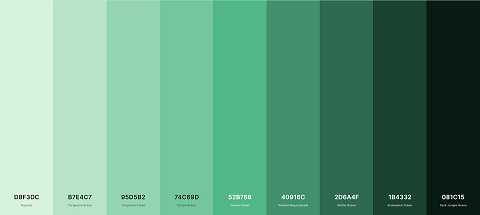

Color Scheme
I chose this color scheme for the wide range of greens. My favorite color is green and I feel like green is the color of nature.
Color Palette
Link To the Palette
Coolors.coBackground Color
#40916C Illuminating Emerald
Navigation Bar and Footer
#081C15 Dark Jungle Green